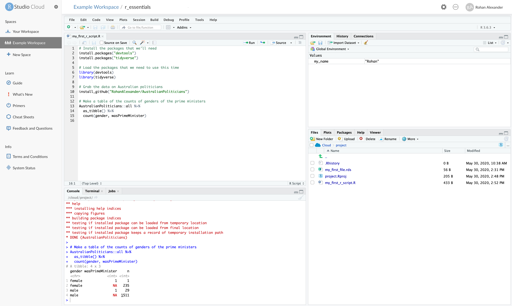
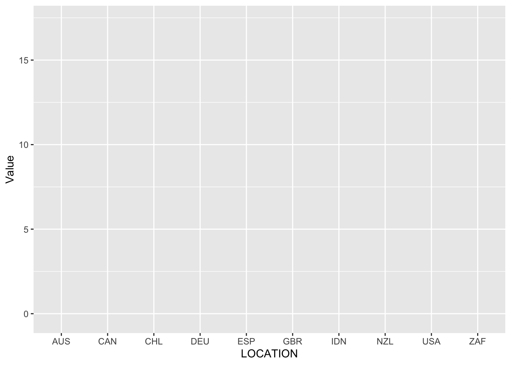
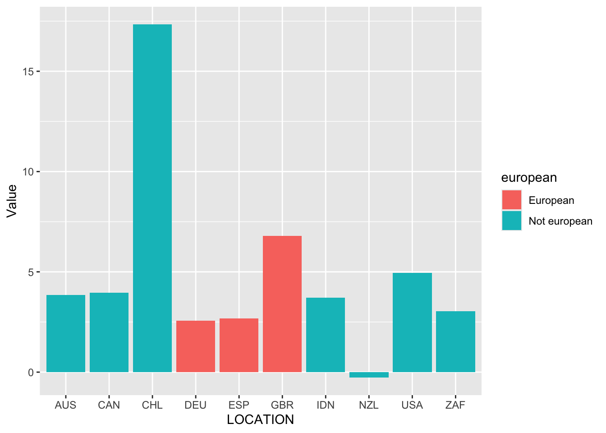

install.packages("tidyverse")Online Appendix A — R essentials
Prerequisites
- Read The Kitchen Counter Observatory, (Healy 2020)
- Discussion of what data hides and reveals.
- Read R for Data Science, Chapter 4 “Data transformation”, (Wickham, Çetinkaya-Rundel, and Grolemund [2016] 2023)
- Provides an overview of manipulating datasets using
dplyr.
- Provides an overview of manipulating datasets using
- Read Data Feminism, Chapter 6 “The Numbers Don’t Speak for Themselves”, (D’Ignazio and Klein 2020)
- Discusses the need to consider data within the broader context that generated them.
- Read R Generation, (Thieme 2018)
- Provides background information about R.
Key concepts and skills
- Understanding foundational aspects of R and RStudio enables a gradual improvement of workflows. For instance, being able to use key
dplyrverbs and make graphs withggplot2makes manipulating and understanding datasets easier. - But there is an awful lot of functionality in the
tidyverseincluding importing data, dataset manipulation, string manipulation, and factors. You do not need to know it all at once, but you should know that you do not yet know it. - Beyond the
tidyverseit is also important to know that foundational aspects, common to many languages, exist and can be added to data science workflows. For instance, class, functions, and data simulation all have an important role to play.
Software and packages
- Base R
- Core
tidyverse(Wickham et al. 2019)dplyr(Wickham et al. 2022)forcats(Wickham 2023)ggplot2(Wickham 2016)readr(Wickham, Hester, and Bryan 2022)stringr(Wickham 2022)tibble(Müller and Wickham 2022)tidyr(Wickham, Vaughan, and Girlich 2023)
- Outer
tidyverse(Wickham et al. 2019) (these need to be loaded separately e.g.library("haven"))haven(Wickham, Miller, and Smith 2023)lubridate(Grolemund and Wickham 2011)
janitor(Firke 2023)
A.1 Introduction
In this chapter we focus on foundational skills needed to use the statistical programming language R (R Core Team 2023) to tell stories with data. Some of it may not make sense at first, but these are skills and approaches that we will often use. You should initially go through this chapter quickly, noting aspects that you do not understand. Then come back to this chapter from time to time as you continue through the rest of the book. That way you will see how the various bits fit into context.
R is an open-source language for statistical programming. You can download R for free from the Comprehensive R Archive Network (CRAN). RStudio is an Integrated Development Environment (IDE) for R which makes the language easier to use and can be downloaded for free from Posit here.
The past ten years or so have been characterized by the increased use of the tidyverse. This is “…an opinionated collection of R packages designed for data science. All packages share an underlying design philosophy, grammar, and data structures” (Wickham 2020). There are three distinctions to be clear about: the original R language, typically referred to as “base”; the tidyverse which is a coherent collection of packages that build on top of base, and other packages.
Essentially everything that we can do in the tidyverse, we can also do in base. But, as the tidyverse was built especially for data science it is often easier to use, especially when learning. Additionally, most everything that we can do in the tidyverse, we can also do with other packages. But, as the tidyverse is a coherent collection of packages, it is often easier to use, again, especially when learning. Eventually there are cases where it makes sense to trade-off the convenience and coherence of the tidyverse for some features of base, other packages, or languages. Indeed, we introduce SQL in Chapter 10 as one source of considerable efficiency gain when working with data. For instance, the tidyverse can be slow, and so if one needs to import thousands of CSVs then it can make sense to switch away from read_csv(). The appropriate use of base and non-tidyverse packages, or even other languages, rather than dogmatic insistence on a particular solution, is a sign of intellectual maturity.
Central to our use of the statistical programming language R is data, and most of the data that we use will have humans at the heart of it. Sometimes, dealing with human-centered data in this way can have a numbing effect, resulting in over-generalization, and potentially problematic work. Another sign of intellectual maturity is when it has the opposite effect, increasing our awareness of our decision-making processes and their consequences.
In practice, I find that far from distancing you from questions of meaning, quantitative data forces you to confront them. The numbers draw you in. Working with data like this is an unending exercise in humility, a constant compulsion to think through what you can and cannot see, and a standing invitation to understand what the measures really capture—what they mean, and for whom.
Healy (2020)
A.2 Broader impacts
“We shouldn’t have to think about the societal impact of our work because it’s hard and other people can do it for us” is a really bad argument. I stopped doing CV [computer vision] research because I saw the impact my work was having. I loved the work but the military applications and privacy concerns eventually became impossible to ignore. But basically all facial recognition work would not get published if we took Broader Impacts sections seriously. There is almost no upside and enormous downside risk. To be fair though I should have a lot of humility here. For most of grad school I bought in to the myth that science is apolitical and research is objectively moral and good no matter what the subject is.
Joe Redmon, 20 February 2020
Although the term “data science” is ubiquitous in academia, industry, and even more generally, as we have seen, it is difficult to define. One deliberately antagonistic definition of data science is “[t]he inhumane reduction of humanity down to what can be counted” (Keyes 2019). While purposefully controversial, this definition highlights one reason for the increased demand for data science and quantitative methods over the past decade—individuals and their behavior are now at the heart of it. Many of the techniques have been around for many decades, but what makes them popular now is this human focus.
Unfortunately, even though much of the work may be focused on individuals, the issues of privacy and consent, and ethical concerns more broadly, rarely seem front of mind. While there are some exceptions, in general, even at the same time as claiming that AI, machine learning, and data science are going to revolutionize society, consideration of these types of issues appears to have been largely treated as something that would be nice to have, rather than something that we may like to think of before we embrace the revolution.
For the most part, these types of issues are not new. In the sciences, there has been extensive ethical consideration around CRISPR technology and gene editing (Brokowski and Adli 2019; Marchese 2022). And in an earlier time similar conversations were had, for instance, about Wernher von Braun being allowed to build rockets for the US despite having done the same for Nazi Germany (Neufeld 2002; Wilford 1977). In medicine these concerns have been front-of-mind for some time (American Medical Association and New York Academy of Medicine 1848). Data science seems determined to have its own Tuskegee-moment rather than think about, and proactively address, these issues based on the experiences of other fields.
That said, there is some evidence that some data scientists are beginning to be more concerned about the ethics surrounding the practice. For instance, NeurIPS, a prestigious machine learning conference, has required a statement on ethics to accompany all submissions since 2020.
In order to provide a balanced perspective, authors are required to include a statement of the potential broader impact of their work, including its ethical aspects and future societal consequences. Authors should take care to discuss both positive and negative outcomes.
NeurIPS 2020 Conference Call For Papers
The purpose of ethical consideration and concern for the broader impact of data science is not to prescriptively rule things in or out, but to provide an opportunity to raise some issues that should be paramount. The variety of data science applications, the relative youth of the field, and the speed of change, mean that such considerations are sometimes knowingly set aside, and this is acceptable to the rest of the field. This contrasts with fields such as science, medicine, engineering, and accounting. Possibly those fields are more self-aware (Figure A.1).

A.3 R, RStudio, and Posit Cloud
R and RStudio are complementary, but they are not the same thing. Müller, Schieferdecker, and Schratz (2019) explain their relationship by analogy, where R is like an engine and RStudio is like a car—we can use engines in a lot of different situations, and they are not limited to being used in cars, but the combination is especially useful.
A.3.1 R
R is an open-source and free programming language that is focused on general statistics. Free in this context does not refer to a price of zero, but instead to the freedom that the creators give users to largely do what they want with it (although it also does have a price of zero). This is in contrast with an open-source programming language that is designed for general purpose, such as Python, or an open-source programming language that is focused on probability, such as Stan. It was created by Ross Ihaka and Robert Gentleman at the University of Auckland in the 1990s, and traces its provenance to S, which was developed at Bell Labs in the 1970s. It is maintained by the R Core Team and changes to this “base” of code occur methodically and with concern given to a variety of different priorities.
Many people build on this stable base, to extend the capabilities of R to better and more quickly suit their needs. They do this by creating packages. Typically, although not always, a package is a collection of R code, mostly functions, and this allows us to more easily do things that we want to do. These packages are managed by repositories such as CRAN and Bioconductor.
If you want to use a package, then you first need to install it on your computer, and then you need to load it when you want to use it. Dr Di Cook, Professor of Business Analytics at Monash University, describes this as analogous to a lightbulb. If you want light in your house, first you need to fit a lightbulb, and then you need to turn the switch on. Installing a package, say, install.packages("tidyverse"), is akin to fitting a lightbulb into a socket—you only need to do this once for each lightbulb. But then each time you want light you need to turn on the switch to the lightbulb, which in the R packages case, means drawing on your library, say, library(tidyverse).
Shoulders of giants
Dr Di Cook is Professor of Business Analytics at Monash University. After earning a PhD in statistics from Rutgers University in 1993 where she focused on statistical graphics, she was appointed as an assistant professor at Iowa State University, being promoted to full professor in 2005, and in 2015 she moved to Monash. One area of her research is data visualization, especially interactive and dynamic graphics. One particularly important paper is Buja, Cook, and Swayne (1996) which proposes a taxonomy of interactive data visualization and associated software XGobi.
To install a package on your computer (again, we will need to do this only once per computer) we use install.packages().
And then when we want to use the package, we use library().
library(tidyverse)Having downloaded it, we can open R and use it directly. It is primarily designed to be interacted with through the command line. While this is functional, it can be useful to have a richer environment than the command line provides. In particular, it can be useful to install an Integrated Development Environment (IDE), which is an application that brings together various bits and pieces that will be used often. One common IDE for R is RStudio, although others such as Visual Studio are also used.
A.3.2 RStudio
RStudio is distinct to R, and they are different entities. RStudio builds on top of R to make it easier to use R. This is in the same way that one could use the internet from the command line, but most people use a browser such as Chrome, Firefox, or Safari.
RStudio is free in the sense that we do not pay for it. It is also free in the sense of being able to take the code, modify it, and distribute that code. But the maker of RStudio, Posit, is a company, albeit it a B Corp, and so it is possible that the current situation could change. It can be downloaded from Posit here.
When we open RStudio it will look like Figure A.2.

The left pane is a console in which you can type and execute R code line by line. Try it with 2+2 by clicking next to the prompt “>”, typing “2+2”, and then pressing “return/enter”.
2 + 2[1] 4The pane on the top right has information about the environment. For instance, when we create variables a list of their names and some properties will appear there. Next to the prompt type the following code, replacing Rohan with your name, and again press enter.
my_name <- "Rohan"As mentioned in Chapter 2 the <-, or “assignment operator”, allocates "Rohan" to an object called “my_name”. You should notice a new value in the environment pane with the variable name and its value.
The pane in the bottom right is a file manager. At the moment it should just have two files: an R History file and a R Project file. We will get to what these are later, but for now we will create and save a file.
Run the following code, without worrying too much about the details for now. And you should see a new “.rds” file in your list of files.
saveRDS(object = my_name, file = "my_first_file.rds")A.3.3 Posit Cloud
While you can and should download RStudio to your own computer, initially we recommend using Posit Cloud. This is an online version of RStudio that is provided by Posit. We will use this so that you can focus on getting comfortable with R and RStudio in an environment that is consistent. This way you do not have to worry about what computer you have or installation permissions, amongst other things.
The free version of Posit Cloud is free as is no financial cost. The trade-off is that it is not very powerful, and it is sometimes slow, but for the purposes of getting started it is enough.
A.4 Getting started
We will now start going through some code. Actively write this all out yourself.
While working line-by-line in the console is fine, it is easier to write out a whole script that can then be run. We will do this by making an R Script (“File” \(\rightarrow\) “New File” \(\rightarrow\) “R Script”). The console pane will fall to the bottom left and an R Script will open in the top left. We will write some code that will get all of the Australian federal politicians and then construct a small table about the genders of the prime ministers. Some of this code will not make sense at this stage, but just type it all out to get into the habit and then run it. To run the whole script, we can click “Run” or we can highlight certain lines and then click “Run” to just run those lines.
# Install the packages that we need
install.packages("tidyverse")
install.packages("AustralianPoliticians")# Load the packages that we need to use this time
library(tidyverse)
library(AustralianPoliticians)
# Make a table of the counts of genders of the prime ministers
get_auspol("all") |> # Imports data from GitHub
as_tibble() |>
filter(wasPrimeMinister == 1) |>
count(gender)# A tibble: 2 × 2
gender n
<chr> <int>
1 female 1
2 male 29We can see that, as at the end of 2021, one female has been prime minister (Julia Gillard), while the other 29 prime ministers were male.
One critical operator when programming is the “pipe”: |>. We read this as “and then”. This takes the output of a line of code and uses it as the first input to the next line of code. It makes code easier to read. By way of background, for many years R users used %>% as the pipe, which is from magrittr (Bache and Wickham 2022) and part of the tidyverse. Base R added the pipe that we use in this book, |>, in 2021, and so if you look at older code, you may see the earlier pipe being used. For the most part, they are interchangeable.
The idea of the pipe is that we take a dataset, and then do something to it. We used this in the earlier example. Another example follows where we will look at the first six lines of a dataset by piping it to head(). Notice that head() does not explicitly take any arguments in this example. It knows which data to display because the pipe tells it implicitly.
get_auspol("all") |> # Imports data from GitHub
head()# A tibble: 6 × 20
uniqueID surname allOtherNames firstName commonName displayName
<chr> <chr> <chr> <chr> <chr> <chr>
1 Abbott1859 Abbott Richard Hartley Smith Richard <NA> Abbott, Richard
2 Abbott1869 Abbott Percy Phipps Percy <NA> Abbott, Percy
3 Abbott1877 Abbott Macartney Macartney Mac Abbott, Mac
4 Abbott1886 Abbott Charles Lydiard Aubrey Charles Aubrey Abbott, Aubrey
5 Abbott1891 Abbott Joseph Palmer Joseph <NA> Abbott, Joseph
6 Abbott1957 Abbott Anthony John Anthony Tony Abbott, Tony
# ℹ 14 more variables: earlierOrLaterNames <chr>, title <chr>, gender <chr>,
# birthDate <date>, birthYear <dbl>, birthPlace <chr>, deathDate <date>,
# member <dbl>, senator <dbl>, wasPrimeMinister <dbl>, wikidataID <chr>,
# wikipedia <chr>, adb <chr>, comments <chr>We can save this R Script as “my_first_r_script.R” (“File” \(\rightarrow\) “Save As”). At this point, our workspace should look something like Figure A.3.

One thing to be aware of is that each Posit Cloud workspace is essentially a new computer. Because of this, we need to install any package that we want to use for each workspace. For instance, before we can use the tidyverse, we need to install it with install.packages("tidyverse"). This contrasts with using one’s own computer.
A few final notes on Posit Cloud:
- In the Australian politician’s example, we got our data from the website GitHub using an R package, but we can get data into a workspace from a local computer in a variety of ways. One way is to use the “upload” button in the “Files” panel. Another is to use
readr(Wickham, Hester, and Bryan 2022), which is part of thetidyverse(Wickham et al. 2019). - Posit Cloud allows some degree of collaboration. For instance, you can give someone else access to a workspace that you create and even both be in the same workspace at the one time. This could be useful for collaboration.
- There are a variety of weaknesses of Posit Cloud, in particular the RAM limits. Additionally, like any web application, things break from time to time or go down.
A.5 The dplyr verbs
One of the key packages that we will use is the tidyverse (Wickham et al. 2019). The tidyverse is actually a package of packages, which means when we install the tidyverse, we actually install a whole bunch of different packages. The key package in the tidyverse in terms of manipulating data is dplyr (Wickham et al. 2022).
There are five dplyr functions that are regularly used, and we will now go through each of these. These are commonly referred to as the dplyr verbs.
select()filter()arrange()mutate()summarise()or equallysummarize()
We will also cover .by, and count() here as they are closely related.
As we have already installed the tidyverse, we just need to load it.
library(tidyverse)And we will begin by again using some data about Australian politicians from the AustralianPoliticians package (Alexander and Hodgetts 2021).
library(AustralianPoliticians)
australian_politicians <-
get_auspol("all")
head(australian_politicians)# A tibble: 6 × 20
uniqueID surname allOtherNames firstName commonName displayName
<chr> <chr> <chr> <chr> <chr> <chr>
1 Abbott1859 Abbott Richard Hartley Smith Richard <NA> Abbott, Richard
2 Abbott1869 Abbott Percy Phipps Percy <NA> Abbott, Percy
3 Abbott1877 Abbott Macartney Macartney Mac Abbott, Mac
4 Abbott1886 Abbott Charles Lydiard Aubrey Charles Aubrey Abbott, Aubrey
5 Abbott1891 Abbott Joseph Palmer Joseph <NA> Abbott, Joseph
6 Abbott1957 Abbott Anthony John Anthony Tony Abbott, Tony
# ℹ 14 more variables: earlierOrLaterNames <chr>, title <chr>, gender <chr>,
# birthDate <date>, birthYear <dbl>, birthPlace <chr>, deathDate <date>,
# member <dbl>, senator <dbl>, wasPrimeMinister <dbl>, wikidataID <chr>,
# wikipedia <chr>, adb <chr>, comments <chr>A.5.1 select()
We use select() to pick particular columns of a dataset. For instance, we might like to select the “firstName” column.
australian_politicians |>
select(firstName)# A tibble: 1,783 × 1
firstName
<chr>
1 Richard
2 Percy
3 Macartney
4 Charles
5 Joseph
6 Anthony
7 John
8 Eric
9 Judith
10 Dick
# ℹ 1,773 more rowsIn R, there are many ways to do things. Sometimes these are different ways to do the same thing, and other times they are different ways to do almost the same thing. For instance, another way to pick a particular column of a dataset is to use the “extract” operator $. This is from base, as opposed to select() which is from the tidyverse.
australian_politicians$firstName |>
head()[1] "Richard" "Percy" "Macartney" "Charles" "Joseph" "Anthony" The two appear similar—both pick the “firstName” column—but they differ in the class of what they return, with select() returning a tibble and $ returning a vector. For the sake of completeness, if we combine select() with pull() then we get the same class of output, a vector, as if we had used the extract operator.
australian_politicians |>
select(firstName) |>
pull() |>
head()[1] "Richard" "Percy" "Macartney" "Charles" "Joseph" "Anthony" We can also use select() to remove columns, by negating the column name.
australian_politicians |>
select(-firstName)# A tibble: 1,783 × 19
uniqueID surname allOtherNames commonName displayName earlierOrLaterNames
<chr> <chr> <chr> <chr> <chr> <chr>
1 Abbott1859 Abbott Richard Hartle… <NA> Abbott, Ri… <NA>
2 Abbott1869 Abbott Percy Phipps <NA> Abbott, Pe… <NA>
3 Abbott1877 Abbott Macartney Mac Abbott, Mac <NA>
4 Abbott1886 Abbott Charles Lydiar… Aubrey Abbott, Au… <NA>
5 Abbott1891 Abbott Joseph Palmer <NA> Abbott, Jo… <NA>
6 Abbott1957 Abbott Anthony John Tony Abbott, To… <NA>
7 Abel1939 Abel John Arthur <NA> Abel, John <NA>
8 Abetz1958 Abetz Eric <NA> Abetz, Eric <NA>
9 Adams1943 Adams Judith Anne <NA> Adams, Jud… nee Bird
10 Adams1951 Adams Dick Godfrey H… <NA> Adams, Dick <NA>
# ℹ 1,773 more rows
# ℹ 13 more variables: title <chr>, gender <chr>, birthDate <date>,
# birthYear <dbl>, birthPlace <chr>, deathDate <date>, member <dbl>,
# senator <dbl>, wasPrimeMinister <dbl>, wikidataID <chr>, wikipedia <chr>,
# adb <chr>, comments <chr>Finally, we can select() based on conditions. For instance, we can select() all of the columns that start with, say, “birth”.
australian_politicians |>
select(starts_with("birth"))# A tibble: 1,783 × 3
birthDate birthYear birthPlace
<date> <dbl> <chr>
1 NA 1859 Bendigo
2 1869-05-14 NA Hobart
3 1877-07-03 NA Murrurundi
4 1886-01-04 NA St Leonards
5 1891-10-18 NA North Sydney
6 1957-11-04 NA London
7 1939-06-25 NA Sydney
8 1958-01-25 NA Stuttgart
9 1943-04-11 NA Picton
10 1951-04-29 NA Launceston
# ℹ 1,773 more rowsThere are a variety of similar “selection helpers” including starts_with(), ends_with(), and contains(). More information about these is available in the help page for select() which can be accessed by running ?select().
At this point, we will use select() to reduce the width of our dataset.
australian_politicians <-
australian_politicians |>
select(
uniqueID,
surname,
firstName,
gender,
birthDate,
birthYear,
deathDate,
member,
senator,
wasPrimeMinister
)
australian_politicians# A tibble: 1,783 × 10
uniqueID surname firstName gender birthDate birthYear deathDate member
<chr> <chr> <chr> <chr> <date> <dbl> <date> <dbl>
1 Abbott1859 Abbott Richard male NA 1859 1940-02-28 0
2 Abbott1869 Abbott Percy male 1869-05-14 NA 1940-09-09 1
3 Abbott1877 Abbott Macartney male 1877-07-03 NA 1960-12-30 0
4 Abbott1886 Abbott Charles male 1886-01-04 NA 1975-04-30 1
5 Abbott1891 Abbott Joseph male 1891-10-18 NA 1965-05-07 1
6 Abbott1957 Abbott Anthony male 1957-11-04 NA NA 1
7 Abel1939 Abel John male 1939-06-25 NA NA 1
8 Abetz1958 Abetz Eric male 1958-01-25 NA NA 0
9 Adams1943 Adams Judith female 1943-04-11 NA 2012-03-31 0
10 Adams1951 Adams Dick male 1951-04-29 NA NA 1
# ℹ 1,773 more rows
# ℹ 2 more variables: senator <dbl>, wasPrimeMinister <dbl>One thing that sometimes confuses people who are new to R, is that the output is not “saved”, unless you assign it to an object. For instance, here the first lines are australian_politicians <- australian_politicians |> and then select() is used, compared with australian_politicians |>. This ensures that the changes brought about by select() are applied to the object, and so it is that modified version that would be used at any point later in the code.
A.5.2 filter()
We use filter() to pick particular rows of a dataset. For instance, we might be only interested in politicians that became prime minister.
australian_politicians |>
filter(wasPrimeMinister == 1)# A tibble: 30 × 10
uniqueID surname firstName gender birthDate birthYear deathDate member
<chr> <chr> <chr> <chr> <date> <dbl> <date> <dbl>
1 Abbott1957 Abbott Anthony male 1957-11-04 NA NA 1
2 Barton1849 Barton Edmund male 1849-01-18 NA 1920-01-07 1
3 Bruce1883 Bruce Stanley male 1883-04-15 NA 1967-08-25 1
4 Chifley1885 Chifley Joseph male 1885-09-22 NA 1951-06-13 1
5 Cook1860 Cook Joseph male 1860-12-07 NA 1947-07-30 1
6 Curtin1885 Curtin John male 1885-01-08 NA 1945-07-05 1
7 Deakin1856 Deakin Alfred male 1856-08-03 NA 1919-10-07 1
8 Fadden1894 Fadden Arthur male 1894-04-13 NA 1973-04-21 1
9 Fisher1862 Fisher Andrew male 1862-08-29 NA 1928-10-22 1
10 Forde1890 Forde Francis male 1890-07-18 NA 1983-01-28 1
# ℹ 20 more rows
# ℹ 2 more variables: senator <dbl>, wasPrimeMinister <dbl>We could also give filter() two conditions. For instance, we could look at politicians that become prime minister and were named Joseph, using the “and” operator &.
australian_politicians |>
filter(wasPrimeMinister == 1 & firstName == "Joseph")# A tibble: 3 × 10
uniqueID surname firstName gender birthDate birthYear deathDate member
<chr> <chr> <chr> <chr> <date> <dbl> <date> <dbl>
1 Chifley1885 Chifley Joseph male 1885-09-22 NA 1951-06-13 1
2 Cook1860 Cook Joseph male 1860-12-07 NA 1947-07-30 1
3 Lyons1879 Lyons Joseph male 1879-09-15 NA 1939-04-07 1
# ℹ 2 more variables: senator <dbl>, wasPrimeMinister <dbl>We get the same result if we use a comma instead of an ampersand.
australian_politicians |>
filter(wasPrimeMinister == 1, firstName == "Joseph")# A tibble: 3 × 10
uniqueID surname firstName gender birthDate birthYear deathDate member
<chr> <chr> <chr> <chr> <date> <dbl> <date> <dbl>
1 Chifley1885 Chifley Joseph male 1885-09-22 NA 1951-06-13 1
2 Cook1860 Cook Joseph male 1860-12-07 NA 1947-07-30 1
3 Lyons1879 Lyons Joseph male 1879-09-15 NA 1939-04-07 1
# ℹ 2 more variables: senator <dbl>, wasPrimeMinister <dbl>Similarly, we could look at politicians who were named, say, Myles or Ruth using the “or” operator |.
australian_politicians |>
filter(firstName == "Myles" | firstName == "Ruth")# A tibble: 3 × 10
uniqueID surname firstName gender birthDate birthYear deathDate member
<chr> <chr> <chr> <chr> <date> <dbl> <date> <dbl>
1 Coleman1931 Coleman Ruth female 1931-09-27 NA 2008-03-27 0
2 Ferricks1875 Ferricks Myles male 1875-11-12 NA 1932-08-20 0
3 Webber1965 Webber Ruth female 1965-03-24 NA NA 0
# ℹ 2 more variables: senator <dbl>, wasPrimeMinister <dbl>We could also pipe the result. For instance we could pipe from filter() to select().
australian_politicians |>
filter(firstName == "Ruth" | firstName == "Myles") |>
select(firstName, surname)# A tibble: 3 × 2
firstName surname
<chr> <chr>
1 Ruth Coleman
2 Myles Ferricks
3 Ruth Webber If we happen to know the particular row number that is of interest then we could filter() to only that particular row. For instance, say the row 853 was of interest.
australian_politicians |>
filter(row_number() == 853)# A tibble: 1 × 10
uniqueID surname firstName gender birthDate birthYear deathDate member
<chr> <chr> <chr> <chr> <date> <dbl> <date> <dbl>
1 Jakobsen1947 Jakobsen Carolyn female 1947-09-11 NA NA 1
# ℹ 2 more variables: senator <dbl>, wasPrimeMinister <dbl>There is also a dedicated function to do this, which is slice().
australian_politicians |>
slice(853)# A tibble: 1 × 10
uniqueID surname firstName gender birthDate birthYear deathDate member
<chr> <chr> <chr> <chr> <date> <dbl> <date> <dbl>
1 Jakobsen1947 Jakobsen Carolyn female 1947-09-11 NA NA 1
# ℹ 2 more variables: senator <dbl>, wasPrimeMinister <dbl>While this may seem somewhat esoteric, it is especially useful if we would like to remove a particular row using negation, or duplicate specific rows. For instance, we could remove the first row.
australian_politicians |>
slice(-1)# A tibble: 1,782 × 10
uniqueID surname firstName gender birthDate birthYear deathDate member
<chr> <chr> <chr> <chr> <date> <dbl> <date> <dbl>
1 Abbott1869 Abbott Percy male 1869-05-14 NA 1940-09-09 1
2 Abbott1877 Abbott Macartney male 1877-07-03 NA 1960-12-30 0
3 Abbott1886 Abbott Charles male 1886-01-04 NA 1975-04-30 1
4 Abbott1891 Abbott Joseph male 1891-10-18 NA 1965-05-07 1
5 Abbott1957 Abbott Anthony male 1957-11-04 NA NA 1
6 Abel1939 Abel John male 1939-06-25 NA NA 1
7 Abetz1958 Abetz Eric male 1958-01-25 NA NA 0
8 Adams1943 Adams Judith female 1943-04-11 NA 2012-03-31 0
9 Adams1951 Adams Dick male 1951-04-29 NA NA 1
10 Adamson1857 Adamson John male 1857-02-18 NA 1922-05-02 0
# ℹ 1,772 more rows
# ℹ 2 more variables: senator <dbl>, wasPrimeMinister <dbl>We could also only, say, only keep the first three rows.
australian_politicians |>
slice(1:3)# A tibble: 3 × 10
uniqueID surname firstName gender birthDate birthYear deathDate member
<chr> <chr> <chr> <chr> <date> <dbl> <date> <dbl>
1 Abbott1859 Abbott Richard male NA 1859 1940-02-28 0
2 Abbott1869 Abbott Percy male 1869-05-14 NA 1940-09-09 1
3 Abbott1877 Abbott Macartney male 1877-07-03 NA 1960-12-30 0
# ℹ 2 more variables: senator <dbl>, wasPrimeMinister <dbl>Finally, we could duplicate the first two rows and this takes advantage of n() which provides the current group size.
australian_politicians |>
slice(1:2, 1:n())# A tibble: 1,785 × 10
uniqueID surname firstName gender birthDate birthYear deathDate member
<chr> <chr> <chr> <chr> <date> <dbl> <date> <dbl>
1 Abbott1859 Abbott Richard male NA 1859 1940-02-28 0
2 Abbott1869 Abbott Percy male 1869-05-14 NA 1940-09-09 1
3 Abbott1859 Abbott Richard male NA 1859 1940-02-28 0
4 Abbott1869 Abbott Percy male 1869-05-14 NA 1940-09-09 1
5 Abbott1877 Abbott Macartney male 1877-07-03 NA 1960-12-30 0
6 Abbott1886 Abbott Charles male 1886-01-04 NA 1975-04-30 1
7 Abbott1891 Abbott Joseph male 1891-10-18 NA 1965-05-07 1
8 Abbott1957 Abbott Anthony male 1957-11-04 NA NA 1
9 Abel1939 Abel John male 1939-06-25 NA NA 1
10 Abetz1958 Abetz Eric male 1958-01-25 NA NA 0
# ℹ 1,775 more rows
# ℹ 2 more variables: senator <dbl>, wasPrimeMinister <dbl>A.5.3 arrange()
We use arrange() to change the order of the dataset based on the values of particular columns. For instance, we could arrange the politicians by their birthday.
australian_politicians |>
arrange(birthYear)# A tibble: 1,783 × 10
uniqueID surname firstName gender birthDate birthYear deathDate member
<chr> <chr> <chr> <chr> <date> <dbl> <date> <dbl>
1 Edwards1842 Edwards Richard male NA 1842 1915-10-29 1
2 Sawers1844 Sawers William male NA 1844 1916-05-19 1
3 Barker1846 Barker Stephen male NA 1846 1924-06-21 0
4 Corser1852 Corser Edward male NA 1852 1928-07-31 1
5 Lee1856 Lee Henry male NA 1856 1927-08-12 1
6 Grant1857 Grant John male NA 1857 1928-05-19 0
7 Abbott1859 Abbott Richard male NA 1859 1940-02-28 0
8 Palmer1859 Palmer Albert male NA 1859 1919-08-14 1
9 Riley1859 Riley Edward male NA 1859 1943-07-21 1
10 Kennedy1860 Kennedy Thomas male NA 1860 1929-02-16 1
# ℹ 1,773 more rows
# ℹ 2 more variables: senator <dbl>, wasPrimeMinister <dbl>We could modify arrange() with desc() to change from ascending to descending order.
australian_politicians |>
arrange(desc(birthYear))# A tibble: 1,783 × 10
uniqueID surname firstName gender birthDate birthYear deathDate member
<chr> <chr> <chr> <chr> <date> <dbl> <date> <dbl>
1 McBain1982 McBain Kristy female 1982-09-29 1982 NA 1
2 Cox1977 Cox Dorinda female NA 1977 NA 0
3 Thorpe1973 Thorpe Lidia female 1973-08-18 1973 NA 0
4 McLachlan1966 McLach… Andrew male 1966-01-14 1966 NA 0
5 Wortley1959 Wortley Dana female NA 1959 NA 0
6 Baker1903 Baker Francis male NA 1903 1939-03-28 1
7 Clay1900 Clay Lionel male NA 1900 1965-04-16 1
8 Breen1898 Breen John male NA 1898 1966-02-05 1
9 Clasby1891 Clasby John male NA 1891 1932-01-15 1
10 Gander1888 Gander Joseph male NA 1888 1954-11-22 1
# ℹ 1,773 more rows
# ℹ 2 more variables: senator <dbl>, wasPrimeMinister <dbl>This could also be achieved with the minus sign.
australian_politicians |>
arrange(-birthYear)# A tibble: 1,783 × 10
uniqueID surname firstName gender birthDate birthYear deathDate member
<chr> <chr> <chr> <chr> <date> <dbl> <date> <dbl>
1 McBain1982 McBain Kristy female 1982-09-29 1982 NA 1
2 Cox1977 Cox Dorinda female NA 1977 NA 0
3 Thorpe1973 Thorpe Lidia female 1973-08-18 1973 NA 0
4 McLachlan1966 McLach… Andrew male 1966-01-14 1966 NA 0
5 Wortley1959 Wortley Dana female NA 1959 NA 0
6 Baker1903 Baker Francis male NA 1903 1939-03-28 1
7 Clay1900 Clay Lionel male NA 1900 1965-04-16 1
8 Breen1898 Breen John male NA 1898 1966-02-05 1
9 Clasby1891 Clasby John male NA 1891 1932-01-15 1
10 Gander1888 Gander Joseph male NA 1888 1954-11-22 1
# ℹ 1,773 more rows
# ℹ 2 more variables: senator <dbl>, wasPrimeMinister <dbl>And we could arrange based on more than one column. For instance, if two politicians have the same first name, then we could also arrange based on their birthday.
australian_politicians |>
arrange(firstName, birthYear)# A tibble: 1,783 × 10
uniqueID surname firstName gender birthDate birthYear deathDate member
<chr> <chr> <chr> <chr> <date> <dbl> <date> <dbl>
1 Blain1894 Blain Adair male 1894-11-21 NA 1983-04-28 1
2 Armstrong1909 Armstr… Adam male 1909-07-01 NA 1982-02-22 1
3 Bandt1972 Bandt Adam male 1972-03-11 NA NA 1
4 Dein1889 Dein Adam male 1889-03-04 NA 1969-05-09 1
5 Ridgeway1962 Ridgew… Aden male 1962-09-18 NA NA 0
6 Bennett1933 Bennett Adrian male 1933-01-21 NA 2006-05-09 1
7 Gibson1935 Gibson Adrian male 1935-11-03 NA 2015-04-30 1
8 Wynne1850 Wynne Agar male 1850-01-15 NA 1934-05-12 1
9 Robertson1882 Robert… Agnes female 1882-07-31 NA 1968-01-29 0
10 Bird1906 Bird Alan male 1906-09-28 NA 1962-07-21 1
# ℹ 1,773 more rows
# ℹ 2 more variables: senator <dbl>, wasPrimeMinister <dbl>We could achieve the same result by piping between two instances of arrange().
australian_politicians |>
arrange(birthYear) |>
arrange(firstName)# A tibble: 1,783 × 10
uniqueID surname firstName gender birthDate birthYear deathDate member
<chr> <chr> <chr> <chr> <date> <dbl> <date> <dbl>
1 Blain1894 Blain Adair male 1894-11-21 NA 1983-04-28 1
2 Armstrong1909 Armstr… Adam male 1909-07-01 NA 1982-02-22 1
3 Bandt1972 Bandt Adam male 1972-03-11 NA NA 1
4 Dein1889 Dein Adam male 1889-03-04 NA 1969-05-09 1
5 Ridgeway1962 Ridgew… Aden male 1962-09-18 NA NA 0
6 Bennett1933 Bennett Adrian male 1933-01-21 NA 2006-05-09 1
7 Gibson1935 Gibson Adrian male 1935-11-03 NA 2015-04-30 1
8 Wynne1850 Wynne Agar male 1850-01-15 NA 1934-05-12 1
9 Robertson1882 Robert… Agnes female 1882-07-31 NA 1968-01-29 0
10 Bird1906 Bird Alan male 1906-09-28 NA 1962-07-21 1
# ℹ 1,773 more rows
# ℹ 2 more variables: senator <dbl>, wasPrimeMinister <dbl>When we use arrange() we should be clear about precedence. For instance, changing to birthday and then first name would give a different arrangement.
australian_politicians |>
arrange(birthYear, firstName)# A tibble: 1,783 × 10
uniqueID surname firstName gender birthDate birthYear deathDate member
<chr> <chr> <chr> <chr> <date> <dbl> <date> <dbl>
1 Edwards1842 Edwards Richard male NA 1842 1915-10-29 1
2 Sawers1844 Sawers William male NA 1844 1916-05-19 1
3 Barker1846 Barker Stephen male NA 1846 1924-06-21 0
4 Corser1852 Corser Edward male NA 1852 1928-07-31 1
5 Lee1856 Lee Henry male NA 1856 1927-08-12 1
6 Grant1857 Grant John male NA 1857 1928-05-19 0
7 Palmer1859 Palmer Albert male NA 1859 1919-08-14 1
8 Riley1859 Riley Edward male NA 1859 1943-07-21 1
9 Abbott1859 Abbott Richard male NA 1859 1940-02-28 0
10 Kennedy1860 Kennedy Thomas male NA 1860 1929-02-16 1
# ℹ 1,773 more rows
# ℹ 2 more variables: senator <dbl>, wasPrimeMinister <dbl>A nice way to arrange by a variety of columns is to use across(). It enables us to use the “selection helpers” such as starts_with() that were mentioned in association with select().
australian_politicians |>
arrange(across(c(firstName, birthYear)))# A tibble: 1,783 × 10
uniqueID surname firstName gender birthDate birthYear deathDate member
<chr> <chr> <chr> <chr> <date> <dbl> <date> <dbl>
1 Blain1894 Blain Adair male 1894-11-21 NA 1983-04-28 1
2 Armstrong1909 Armstr… Adam male 1909-07-01 NA 1982-02-22 1
3 Bandt1972 Bandt Adam male 1972-03-11 NA NA 1
4 Dein1889 Dein Adam male 1889-03-04 NA 1969-05-09 1
5 Ridgeway1962 Ridgew… Aden male 1962-09-18 NA NA 0
6 Bennett1933 Bennett Adrian male 1933-01-21 NA 2006-05-09 1
7 Gibson1935 Gibson Adrian male 1935-11-03 NA 2015-04-30 1
8 Wynne1850 Wynne Agar male 1850-01-15 NA 1934-05-12 1
9 Robertson1882 Robert… Agnes female 1882-07-31 NA 1968-01-29 0
10 Bird1906 Bird Alan male 1906-09-28 NA 1962-07-21 1
# ℹ 1,773 more rows
# ℹ 2 more variables: senator <dbl>, wasPrimeMinister <dbl>australian_politicians |>
arrange(across(starts_with("birth")))# A tibble: 1,783 × 10
uniqueID surname firstName gender birthDate birthYear deathDate member
<chr> <chr> <chr> <chr> <date> <dbl> <date> <dbl>
1 Braddon1829 Braddon Edward male 1829-06-11 NA 1904-02-02 1
2 Ferguson1830 Ferguson John male 1830-03-15 NA 1906-03-30 0
3 Zeal1830 Zeal William male 1830-12-05 NA 1912-03-11 0
4 Fraser1832 Fraser Simon male 1832-08-21 NA 1919-07-30 0
5 Groom1833 Groom William male 1833-03-09 NA 1901-08-08 1
6 Sargood1834 Sargood Frederick male 1834-05-30 NA 1903-01-02 0
7 Fysh1835 Fysh Philip male 1835-03-01 NA 1919-12-20 1
8 Playford1837 Playford Thomas male 1837-11-26 NA 1915-04-19 0
9 Solomon1839 Solomon Elias male 1839-09-02 NA 1909-05-23 1
10 McLean1840 McLean Allan male 1840-02-03 NA 1911-07-13 1
# ℹ 1,773 more rows
# ℹ 2 more variables: senator <dbl>, wasPrimeMinister <dbl>A.5.4 mutate()
We use mutate() when we want to make a new column. For instance, perhaps we want to make a new column that is 1 if a person was both a member and a senator and 0 otherwise. That is to say that our new column would denote politicians that served in both the upper and the lower house.
australian_politicians <-
australian_politicians |>
mutate(was_both = if_else(member == 1 & senator == 1, 1, 0))
australian_politicians |>
select(member, senator, was_both)# A tibble: 1,783 × 3
member senator was_both
<dbl> <dbl> <dbl>
1 0 1 0
2 1 1 1
3 0 1 0
4 1 0 0
5 1 0 0
6 1 0 0
7 1 0 0
8 0 1 0
9 0 1 0
10 1 0 0
# ℹ 1,773 more rowsWe could use mutate() with math, such as addition and subtraction. For instance, we could calculate the age that the politicians are (or would have been) in 2022.
library(lubridate)
australian_politicians <-
australian_politicians |>
mutate(age = 2022 - year(birthDate))
australian_politicians |>
select(uniqueID, age)# A tibble: 1,783 × 2
uniqueID age
<chr> <dbl>
1 Abbott1859 NA
2 Abbott1869 153
3 Abbott1877 145
4 Abbott1886 136
5 Abbott1891 131
6 Abbott1957 65
7 Abel1939 83
8 Abetz1958 64
9 Adams1943 79
10 Adams1951 71
# ℹ 1,773 more rowsThere are a variety of functions that are especially useful when constructing new columns. These include log() which will compute the natural logarithm, lead() which will bring values up by one row, lag() which will push values down by one row, and cumsum() which creates a cumulative sum of the column.
australian_politicians |>
select(uniqueID, age) |>
mutate(log_age = log(age))# A tibble: 1,783 × 3
uniqueID age log_age
<chr> <dbl> <dbl>
1 Abbott1859 NA NA
2 Abbott1869 153 5.03
3 Abbott1877 145 4.98
4 Abbott1886 136 4.91
5 Abbott1891 131 4.88
6 Abbott1957 65 4.17
7 Abel1939 83 4.42
8 Abetz1958 64 4.16
9 Adams1943 79 4.37
10 Adams1951 71 4.26
# ℹ 1,773 more rowsaustralian_politicians |>
select(uniqueID, age) |>
mutate(lead_age = lead(age))# A tibble: 1,783 × 3
uniqueID age lead_age
<chr> <dbl> <dbl>
1 Abbott1859 NA 153
2 Abbott1869 153 145
3 Abbott1877 145 136
4 Abbott1886 136 131
5 Abbott1891 131 65
6 Abbott1957 65 83
7 Abel1939 83 64
8 Abetz1958 64 79
9 Adams1943 79 71
10 Adams1951 71 165
# ℹ 1,773 more rowsaustralian_politicians |>
select(uniqueID, age) |>
mutate(lag_age = lag(age))# A tibble: 1,783 × 3
uniqueID age lag_age
<chr> <dbl> <dbl>
1 Abbott1859 NA NA
2 Abbott1869 153 NA
3 Abbott1877 145 153
4 Abbott1886 136 145
5 Abbott1891 131 136
6 Abbott1957 65 131
7 Abel1939 83 65
8 Abetz1958 64 83
9 Adams1943 79 64
10 Adams1951 71 79
# ℹ 1,773 more rowsaustralian_politicians |>
select(uniqueID, age) |>
drop_na(age) |>
mutate(cumulative_age = cumsum(age))# A tibble: 1,718 × 3
uniqueID age cumulative_age
<chr> <dbl> <dbl>
1 Abbott1869 153 153
2 Abbott1877 145 298
3 Abbott1886 136 434
4 Abbott1891 131 565
5 Abbott1957 65 630
6 Abel1939 83 713
7 Abetz1958 64 777
8 Adams1943 79 856
9 Adams1951 71 927
10 Adamson1857 165 1092
# ℹ 1,708 more rowsAs we have in earlier examples, we can also use mutate() in combination with across(). This includes the potential use of the selection helpers. For instance, we could count the number of characters in both the first and last names at the same time.
australian_politicians |>
mutate(across(c(firstName, surname), str_count)) |>
select(uniqueID, firstName, surname)# A tibble: 1,783 × 3
uniqueID firstName surname
<chr> <int> <int>
1 Abbott1859 7 6
2 Abbott1869 5 6
3 Abbott1877 9 6
4 Abbott1886 7 6
5 Abbott1891 6 6
6 Abbott1957 7 6
7 Abel1939 4 4
8 Abetz1958 4 5
9 Adams1943 6 5
10 Adams1951 4 5
# ℹ 1,773 more rowsFinally, we use case_when() when we need to make a new column on the basis of more than two conditional statements (in contrast to if_else() from our first mutate() example). For instance, we may have some years and want to group them into decades.
library(lubridate)
australian_politicians |>
mutate(
year_of_birth = year(birthDate),
decade_of_birth =
case_when(
year_of_birth <= 1929 ~ "pre-1930",
year_of_birth <= 1939 ~ "1930s",
year_of_birth <= 1949 ~ "1940s",
year_of_birth <= 1959 ~ "1950s",
year_of_birth <= 1969 ~ "1960s",
year_of_birth <= 1979 ~ "1970s",
year_of_birth <= 1989 ~ "1980s",
year_of_birth <= 1999 ~ "1990s",
TRUE ~ "Unknown or error"
)
) |>
select(uniqueID, year_of_birth, decade_of_birth)# A tibble: 1,783 × 3
uniqueID year_of_birth decade_of_birth
<chr> <dbl> <chr>
1 Abbott1859 NA Unknown or error
2 Abbott1869 1869 pre-1930
3 Abbott1877 1877 pre-1930
4 Abbott1886 1886 pre-1930
5 Abbott1891 1891 pre-1930
6 Abbott1957 1957 1950s
7 Abel1939 1939 1930s
8 Abetz1958 1958 1950s
9 Adams1943 1943 1940s
10 Adams1951 1951 1950s
# ℹ 1,773 more rowsWe could accomplish this with a series of nested if_else() statements, but case_when() is more clear. The cases are evaluated in order and as soon as there is a match case_when() does not continue to the remainder of the cases. It can be useful to have a catch-all at the end that will signal if there is a potential issue that we might like to know about if the code were to ever get there.
A.5.5 summarise()
We use summarise() when we would like to make new, condensed, summary variables. For instance, perhaps we would like to know the minimum, average, and maximum of some column.
australian_politicians |>
summarise(
youngest = min(age, na.rm = TRUE),
oldest = max(age, na.rm = TRUE),
average = mean(age, na.rm = TRUE)
)# A tibble: 1 × 3
youngest oldest average
<dbl> <dbl> <dbl>
1 28 193 101.As an aside, summarise() and summarize() are equivalent and we can use either. In this book we use summarise().
australian_politicians |>
summarize(
youngest = min(age, na.rm = TRUE),
oldest = max(age, na.rm = TRUE),
average = mean(age, na.rm = TRUE)
)# A tibble: 1 × 3
youngest oldest average
<dbl> <dbl> <dbl>
1 28 193 101.By default, summarise() will provide one row of output for a whole dataset. For instance, in the earlier example we found the youngest, oldest, and average across all politicians. However, we can create more groups in our dataset using .by within the function. We can use many functions on the basis of groups, but the summarise() function is particularly powerful in conjunction with .by. For instance, we could group by gender, and then get age-based summary statistics.
australian_politicians |>
summarise(
youngest = min(age, na.rm = TRUE),
oldest = max(age, na.rm = TRUE),
average = mean(age, na.rm = TRUE),
.by = gender
)# A tibble: 2 × 4
gender youngest oldest average
<chr> <dbl> <dbl> <dbl>
1 male 28 193 106.
2 female 32 140 66.0Similarly, we could look at youngest, oldest, and mean age at death by gender.
australian_politicians |>
mutate(days_lived = deathDate - birthDate) |>
drop_na(days_lived) |>
summarise(
min_days = min(days_lived),
mean_days = mean(days_lived) |> round(),
max_days = max(days_lived),
.by = gender
)# A tibble: 2 × 4
gender min_days mean_days max_days
<chr> <drtn> <drtn> <drtn>
1 male 12380 days 27376 days 36416 days
2 female 14856 days 28857 days 35560 daysAnd so we learn that female members of parliament on average lived slightly longer than male members of parliament.
We can use .by on the basis of more than one group. For instance, we could look at the average number of days lived by gender and by they were in the House of Representatives or the Senate.
australian_politicians |>
mutate(days_lived = deathDate - birthDate) |>
drop_na(days_lived) |>
summarise(
min_days = min(days_lived),
mean_days = mean(days_lived) |> round(),
max_days = max(days_lived),
.by = c(gender, member)
)# A tibble: 4 × 5
gender member min_days mean_days max_days
<chr> <dbl> <drtn> <drtn> <drtn>
1 male 1 12380 days 27496 days 36328 days
2 male 0 13619 days 27133 days 36416 days
3 female 0 21746 days 29517 days 35560 days
4 female 1 14856 days 27538 days 33442 daysWe can use count() to create counts by groups. For instance, the number of politicians by gender.
australian_politicians |>
count(gender)# A tibble: 2 × 2
gender n
<chr> <int>
1 female 240
2 male 1543In addition to the count(), we could calculate a proportion.
australian_politicians |>
count(gender) |>
mutate(proportion = n / (sum(n)))# A tibble: 2 × 3
gender n proportion
<chr> <int> <dbl>
1 female 240 0.135
2 male 1543 0.865Using count() is essentially the same as using .by within summarise() with n(), and we get the same result in that way.
australian_politicians |>
summarise(n = n(),
.by = gender)# A tibble: 2 × 2
gender n
<chr> <int>
1 male 1543
2 female 240And there is a comparably helpful function that acts similarly tomutate(), which is add_count(). The difference is that the number will be added in a new column.
australian_politicians |>
add_count(gender) |>
select(uniqueID, gender, n)# A tibble: 1,783 × 3
uniqueID gender n
<chr> <chr> <int>
1 Abbott1859 male 1543
2 Abbott1869 male 1543
3 Abbott1877 male 1543
4 Abbott1886 male 1543
5 Abbott1891 male 1543
6 Abbott1957 male 1543
7 Abel1939 male 1543
8 Abetz1958 male 1543
9 Adams1943 female 240
10 Adams1951 male 1543
# ℹ 1,773 more rowsA.6 Base
While the tidyverse was established relatively recently to help with data science, R existed long before this. There is a host of functionality that is built into R especially around the core needs of programming and statisticians.
In particular, we will cover:
class().- Data simulation.
function(),for(), andapply().
There is no need to install or load any additional packages, as this functionality comes with R.
A.6.1 class()
In everyday usage “a, b, c, …” are letters and “1, 2, 3,…” are numbers. And we use letters and numbers differently; for instance, we do not add or subtract letters. Similarly, R needs to have some way of distinguishing different classes of content and to define the properties that each class has, “how it behaves, and how it relates to other types of objects” (Wickham 2019).
Classes have a hierarchy. For instance, we are “human”, which is itself “animal”. All “humans” are “animals”, but not all “animals” are “humans”. Similarly, all integers are numbers, but not all numbers are integers. We can find out the class of an object in R with class().
a_number <- 8
class(a_number)[1] "numeric"a_letter <- "a"
class(a_letter)[1] "character"The classes that we cover here are “numeric”, “character”, “factor”, “date”, and “data.frame”.
The first thing to know is that, in the same way that a frog can become a prince, we can sometimes change the class of an object in R. This is called “casting”. For instance, we could start with a “numeric”, change it to a “character” with as.character(), and then a “factor” with as.factor(). But if we tried to make it into a “date” with as.Date() we would get an error because no all numbers have the properties that are needed to be a date.
a_number <- 8
a_number[1] 8class(a_number)[1] "numeric"a_number <- as.character(a_number)
a_number[1] "8"class(a_number)[1] "character"a_number <- as.factor(a_number)
a_number[1] 8
Levels: 8class(a_number)[1] "factor"Compared with “numeric” and “character” classes, the “factor” class might be less familiar. A “factor” is used for categorical data that can only take certain values (Wickham 2019). For instance, typical usage of a “factor” variable would be a binary, such as “day” or “night”. It is also often used for age-groups, such as “18-29”, “30-44”, “45-60”, “60+” (as opposed to age, which would often be a “numeric”); and sometimes for level of education: “less than high school”, “high school”, “college”, “undergraduate degree”, “postgraduate degree”. We can find the allowed levels for a “factor” using levels().
age_groups <- factor(
c("18-29", "30-44", "45-60", "60+")
)
age_groups[1] 18-29 30-44 45-60 60+
Levels: 18-29 30-44 45-60 60+class(age_groups)[1] "factor"levels(age_groups)[1] "18-29" "30-44" "45-60" "60+" Dates are an especially tricky class and quickly become complicated. Nonetheless, at a foundational level, we can use as.Date() to convert a character that looks like a “date” into an actual “date”. This enables us to, say, perform addition and subtraction, when we would not be able to do that with a “character”.
looks_like_a_date_but_is_not <- "2022-01-01"
looks_like_a_date_but_is_not[1] "2022-01-01"class(looks_like_a_date_but_is_not)[1] "character"is_a_date <- as.Date(looks_like_a_date_but_is_not)
is_a_date[1] "2022-01-01"class(is_a_date)[1] "Date"is_a_date + 3[1] "2022-01-04"The final class that we discuss here is “data.frame”. This looks like a spreadsheet and is commonly used to store the data that we will analyze. Formally, “a data frame is a list of equal-length vectors” (Wickham 2019). It will have column and row names which we can see using colnames() and rownames(), although often the names of the rows are just numbers.
To illustrate this, we use the “ResumeNames” dataset from AER (Kleiber and Zeileis 2008). This package can be installed in the same way as any other package from CRAN. This dataset comprises cross-sectional data about resume content, especially the name used on the resume, and associated information about whether the candidate received a call-back for 4,870 fictitious resumes. The dataset was created by Bertrand and Mullainathan (2004) who sent fictitious resumes in response to job advertisements in Boston and Chicago that differed in whether the resume was assigned a “very African American sounding name or a very White sounding name”. They found considerable discrimination whereby “White names receive 50 per cent more callbacks for interviews”. Hangartner, Kopp, and Siegenthaler (2021) generalize this using an online Swiss platform and find that immigrants and minority ethnic groups are contacted less by recruiters, as are women when the profession is men-dominated, and vice versa.
install.packages("AER")library(AER)
data("ResumeNames", package = "AER")ResumeNames |>
head() name gender ethnicity quality call city jobs experience honors
1 Allison female cauc low no chicago 2 6 no
2 Kristen female cauc high no chicago 3 6 no
3 Lakisha female afam low no chicago 1 6 no
4 Latonya female afam high no chicago 4 6 no
5 Carrie female cauc high no chicago 3 22 no
6 Jay male cauc low no chicago 2 6 yes
volunteer military holes school email computer special college minimum equal
1 no no yes no no yes no yes 5 yes
2 yes yes no yes yes yes no no 5 yes
3 no no no yes no yes no yes 5 yes
4 yes no yes no yes yes yes no 5 yes
5 no no no yes yes yes no no some yes
6 no no no no no no yes yes none yes
wanted requirements reqexp reqcomm reqeduc reqcomp reqorg
1 supervisor yes yes no no yes no
2 supervisor yes yes no no yes no
3 supervisor yes yes no no yes no
4 supervisor yes yes no no yes no
5 secretary yes yes no no yes yes
6 other no no no no no no
industry
1 manufacturing
2 manufacturing
3 manufacturing
4 manufacturing
5 health/education/social services
6 tradeclass(ResumeNames)[1] "data.frame"colnames(ResumeNames) [1] "name" "gender" "ethnicity" "quality" "call"
[6] "city" "jobs" "experience" "honors" "volunteer"
[11] "military" "holes" "school" "email" "computer"
[16] "special" "college" "minimum" "equal" "wanted"
[21] "requirements" "reqexp" "reqcomm" "reqeduc" "reqcomp"
[26] "reqorg" "industry" We can examine the class of the vectors, i.e. the columns, that make-up a data frame by specifying the column name.
class(ResumeNames$name)[1] "factor"class(ResumeNames$jobs)[1] "integer"Sometimes it is helpful to be able to change the classes of many columns at once. We can do this by using mutate() and across().
class(ResumeNames$name)[1] "factor"class(ResumeNames$gender)[1] "factor"class(ResumeNames$ethnicity)[1] "factor"ResumeNames <- ResumeNames |>
mutate(across(c(name, gender, ethnicity), as.character)) |>
head()
class(ResumeNames$name)[1] "character"class(ResumeNames$gender)[1] "character"class(ResumeNames$ethnicity)[1] "character"There are many ways for code to not run but having an issue with the class is always among the first things to check. Common issues are variables that we think should be “character” or “numeric” actually being “factor”. And variables that we think should be “numeric” actually being “character”.
Finally, it is worth pointing out that the class of a vector is whatever the class of the content. In Python and other languages, a similar data structure to a vector is a “list”. A “list” is a class of its own, and the objects in a “list” have their own classes (for instance, ["a", 1] is an object of class “list” with entries of class “string” and “int”). This may be counter-intuitive to see that a vector is not its own class if you are coming to R from another language.
A.6.2 Simulating data
Simulating data is a key skill for telling believable stories with data. In order to simulate data, we need to be able to randomly draw from statistical distributions and other collections. R has a variety of functions to make this easier, including: the normal distribution, rnorm(); the uniform distribution, runif(); the Poisson distribution, rpois(); the binomial distribution, rbinom(); and many others. To randomly sample from a collection of items, we can use sample().
When dealing with randomness, the need for reproducibility makes it important, paradoxically, that the randomness is repeatable. That is to say, another person needs to be able to draw the random numbers that we draw. We do this by setting a seed for our random draws using set.seed().
We could get observations from the standard normal distribution and put the those into a data frame.
set.seed(853)
number_of_observations <- 5
simulated_data <-
data.frame(
person = c(1:number_of_observations),
std_normal_observations = rnorm(
n = number_of_observations,
mean = 0,
sd = 1
)
)
simulated_data person std_normal_observations
1 1 -0.35980342
2 2 -0.04064753
3 3 -1.78216227
4 4 -1.12242282
5 5 -1.00278400We could then add draws from the uniform, Poisson, and binomial distributions, using cbind() to bring the columns of the original dataset and the new one together.
simulated_data <-
simulated_data |>
cbind() |>
data.frame(
uniform_observations =
runif(n = number_of_observations, min = 0, max = 10),
poisson_observations =
rpois(n = number_of_observations, lambda = 100),
binomial_observations =
rbinom(n = number_of_observations, size = 2, prob = 0.5)
)
simulated_data person std_normal_observations uniform_observations poisson_observations
1 1 -0.35980342 9.6219155 81
2 2 -0.04064753 7.2269016 91
3 3 -1.78216227 0.8252921 84
4 4 -1.12242282 1.0379810 100
5 5 -1.00278400 3.0942004 97
binomial_observations
1 2
2 1
3 1
4 1
5 1Finally, we will add a favorite color to each observation with sample().
simulated_data <-
data.frame(
favorite_color = sample(
x = c("blue", "white"),
size = number_of_observations,
replace = TRUE
)
) |>
cbind(simulated_data)
simulated_data favorite_color person std_normal_observations uniform_observations
1 blue 1 -0.35980342 9.6219155
2 blue 2 -0.04064753 7.2269016
3 blue 3 -1.78216227 0.8252921
4 white 4 -1.12242282 1.0379810
5 blue 5 -1.00278400 3.0942004
poisson_observations binomial_observations
1 81 2
2 91 1
3 84 1
4 100 1
5 97 1We set the option “replace” to “TRUE” because we are only choosing between two items, but each time we choose we want the possibility that either are chosen. Depending on the simulation we may need to think about whether “replace” should be “TRUE” or “FALSE”. Another useful optional argument in sample() is to adjust the probability with which each item is drawn. The default is that all options are equally likely, but we could specify particular probabilities if we wanted to with “prob”. As always with functions, we can find more in the help file, for instance ?sample.
A.6.3 function(), for(), and apply()
R “is a functional programming language” (Wickham 2019). This means that we foundationally write, use, and compose functions, which are collections of code that accomplish something specific.
There are a lot of functions in R that other people have written, and we can use. Almost any common statistical or data science task that we might need to accomplish likely already has a function that has been written by someone else and made available to us, either as part of the base R installation or a package. But we will need to write our own functions from time to time, especially for more-specific tasks. We define a function using function(), and then assign a name. We will likely need to include some inputs and outputs for the function. Inputs are specified between round brackets. The specific task that the function is to accomplish goes between braces.
print_names <- function(some_names) {
print(some_names)
}
print_names(c("rohan", "monica"))[1] "rohan" "monica"We can specify defaults for the inputs in case the person using the function does not supply them.
print_names <- function(some_names = c("edward", "hugo")) {
print(some_names)
}
print_names()[1] "edward" "hugo" One common scenario is that we want to apply a function multiple times. Like many programming languages, we can use a for() loop for this. The look of a for() loop in R is similar to function(), in that we define what we are iterating over in the round brackets, and the function to apply in braces.
Because R is a programming language that is focused on statistics, we are often interested in arrays or matrices. We use apply() to apply a function to rows (“MARGIN = 1”) or columns (“MARGIN = 2”).
simulated_data favorite_color person std_normal_observations uniform_observations
1 blue 1 -0.35980342 9.6219155
2 blue 2 -0.04064753 7.2269016
3 blue 3 -1.78216227 0.8252921
4 white 4 -1.12242282 1.0379810
5 blue 5 -1.00278400 3.0942004
poisson_observations binomial_observations
1 81 2
2 91 1
3 84 1
4 100 1
5 97 1apply(X = simulated_data, MARGIN = 2, FUN = unique)$favorite_color
[1] "blue" "white"
$person
[1] "1" "2" "3" "4" "5"
$std_normal_observations
[1] "-0.35980342" "-0.04064753" "-1.78216227" "-1.12242282" "-1.00278400"
$uniform_observations
[1] "9.6219155" "7.2269016" "0.8252921" "1.0379810" "3.0942004"
$poisson_observations
[1] " 81" " 91" " 84" "100" " 97"
$binomial_observations
[1] "2" "1"A.7 Making graphs with ggplot2
If the key package in the tidyverse in terms of manipulating data is dplyr (Wickham et al. 2022), then the key package in the tidyverse in terms of creating graphs is ggplot2 (Wickham 2016). We will have more to say about graphing in Chapter 5, but here we provide a quick tour of some essentials. ggplot2 works by defining layers which build to form a graph, based around the “grammar of graphics” (hence, the “gg”). Instead of the pipe operator (|>) ggplot2 uses the add operator +. As part of the tidyverse collection of packages, ggplot2 does not need to be explicitly installed or loaded if the tidyverse has been loaded.
There are three key aspects that need to be specified to build a graph with ggplot2:
- Data;
- Aesthetics / mapping; and
- Type.
To get started we will obtain some GDP data for countries in the Organisation for Economic Co-operation and Development (OECD) (OECD 2022).
library(tidyverse)
oecd_gdp <-
read_csv("https://stats.oecd.org/sdmx-json/data/DP_LIVE/.QGDP.../OECD?contentType=csv&detail=code&separator=comma&csv-lang=en")
write_csv(oecd_gdp, "inputs/data/oecd_gdp.csv")# A tibble: 6 × 8
LOCATION INDICATOR SUBJECT MEASURE FREQUENCY TIME Value `Flag Codes`
<chr> <chr> <chr> <chr> <chr> <chr> <dbl> <chr>
1 OECD QGDP TOT PC_CHGPP A 1962 5.70 <NA>
2 OECD QGDP TOT PC_CHGPP A 1963 5.20 <NA>
3 OECD QGDP TOT PC_CHGPP A 1964 6.38 <NA>
4 OECD QGDP TOT PC_CHGPP A 1965 5.35 <NA>
5 OECD QGDP TOT PC_CHGPP A 1966 5.75 <NA>
6 OECD QGDP TOT PC_CHGPP A 1967 3.96 <NA> We are interested, firstly, in making a bar chart of GDP change in the third quarter of 2021 for ten countries: Australia, Canada, Chile, Indonesia, Germany, Great Britain, New Zealand, South Africa, Spain, and the US.
oecd_gdp_2021_q3 <-
oecd_gdp |>
filter(
TIME == "2021-Q3",
SUBJECT == "TOT",
LOCATION %in% c(
"AUS",
"CAN",
"CHL",
"DEU",
"GBR",
"IDN",
"ESP",
"NZL",
"USA",
"ZAF"
),
MEASURE == "PC_CHGPY"
) |>
mutate(
european = if_else(
LOCATION %in% c("DEU", "GBR", "ESP"),
"European",
"Not european"
),
hemisphere = if_else(
LOCATION %in% c("CAN", "DEU", "GBR", "ESP", "USA"),
"Northern Hemisphere",
"Southern Hemisphere"
),
)We start with ggplot() and specify a mapping/aesthetic, which in this case means specifying the x-axis and the y-axis. The first argument in ggplot() is the data we want to visualize, so we can use the pipe operator at this stage as usual.
oecd_gdp_2021_q3 |>
ggplot(mapping = aes(x = LOCATION, y = Value))
Now we need to specify the type of graph that we are interested in. In this case we want a bar chart and we do this by adding geom_bar() using +.
oecd_gdp_2021_q3 |>
ggplot(mapping = aes(x = LOCATION, y = Value)) +
geom_bar(stat = "identity")
We can color the bars by whether the country is European by adding another aesthetic, “fill”.
oecd_gdp_2021_q3 |>
ggplot(mapping = aes(x = LOCATION, y = Value, fill = european)) +
geom_bar(stat = "identity")
Finally, we could make it look nicer by: adding labels, labs(); changing the color, scale_fill_brewer(); and the background, theme_classic().
oecd_gdp_2021_q3 |>
ggplot(mapping = aes(x = LOCATION, y = Value, fill = european)) +
geom_bar(stat = "identity") +
labs(
title = "Quarterly change in GDP for ten OECD countries in 2021Q3",
x = "Countries",
y = "Change (%)",
fill = "Is European?"
) +
theme_classic() +
scale_fill_brewer(palette = "Set1")
Facets enable us to that we create subplots that focus on specific aspects of our data. They are invaluable because they allow us to add another variable to a graph without having to make a 3D graph. We use facet_wrap() to add facets and specify the variable that we would like to facet by. In this case, we facet by hemisphere.
oecd_gdp_2021_q3 |>
ggplot(mapping = aes(x = LOCATION, y = Value, fill = european)) +
geom_bar(stat = "identity") +
labs(
title = "Quarterly change in GDP for ten OECD countries in 2021Q3",
x = "Countries",
y = "Change (%)",
fill = "Is European?"
) +
theme_classic() +
scale_fill_brewer(palette = "Set1") +
facet_wrap(
~hemisphere,
scales = "free_x"
)
A.8 Exploring the tidyverse
We have focused on two aspects of the tidyverse: dplyr, and ggplot2. However, the tidyverse comprises a variety of different packages and functions. We will now go through four common aspects:
- Importing data and
tibble(); - Joining and pivoting datasets;
- String manipulation and
stringr; - Factor variables and
forcats.
However, the first task is to deal with the nomenclature, and in particular to be specific about what is “tidy” about the “tidyverse”. The name refers to tidy data, and the benefit of that is that while there are a variety of ways for data to be messy, tidy data satisfy three rules. This means the structure of the datasets is consistent regardless of the specifics, and makes it easier to apply functions that expect certain types of input. Tidy data refers to a dataset where (Wickham, Çetinkaya-Rundel, and Grolemund [2016] 2023; Wickham 2014, 4):
- Every variable is in a column of its own.
- Every observation is in its own row.
- Every value is in its own cell.
Table A.1 is not tidy because age and hair share a column. Table A.2 is its tidy counterpart.
| Person | Variable | Value |
|---|---|---|
| Rohan | Age | 35 |
| Rohan | Hair | Black |
| Monica | Age | 35 |
| Monica | Hair | Blonde |
| Edward | Age | 3 |
| Edward | Hair | Brown |
| Hugo | Age | 1 |
| Hugo | Hair | Blonde |
| Person | Age | Hair |
|---|---|---|
| Rohan | 35 | Black |
| Monica | 35 | Blonde |
| Edward | 3 | Brown |
| Hugo | 1 | Blonde |
A.8.1 Importing data and tibble()
There are a variety of ways to get data into R so that we can use it. For CSV files, there is read_csv() from readr (Wickham, Hester, and Bryan 2022), and for Stata files, there is read_dta() from haven (Wickham, Miller, and Smith 2023).
CSVs are a common format and have many advantages including the fact that they typically do not modify the data. Each column is separated by a comma, and each row is a record. We can provide read_csv() with a URL or a local file to read. There are a variety of different options that can be passed to read_csv() including the ability to specify whether the dataset has column names, the types of the columns, and how many lines to skip. If we do not specify the types of the columns then read_csv() will make a guess by looking at the dataset.
We use read_dta() to read .dta files, which are commonly produced by the statistical program Stata. This means that they are common in fields such as sociology, political science, and economics. This format separates the data from its labels and so we typically reunite these using to_factor() from labelled (Larmarange 2023). haven is part of the tidyverse, but is not automatically loaded by default, in contrast to a package such as ggplot2, and so we would need to run library(haven).
Typically a dataset enters R as a “data.frame”. While this can be useful, another helpful class for a dataset is “tibble”. These can be created using tibble() from tibble, which is part of the tidyverse. A tibble is a data frame, with some particular changes that make it easier to work with, including not converting strings to factors by default, showing the class of columns, and printing nicely.
We can make a tibble manually, if need be, for instance, when we simulate data. But we typically import data directly as a tibble, for instance, when we use read_csv().
people_as_dataframe <-
data.frame(
names = c("rohan", "monica"),
website = c("rohanalexander.com", "monicaalexander.com"),
fav_color = c("blue", "white")
)
class(people_as_dataframe)[1] "data.frame"people_as_dataframe names website fav_color
1 rohan rohanalexander.com blue
2 monica monicaalexander.com whitepeople_as_tibble <-
tibble(
names = c("rohan", "monica"),
website = c("rohanalexander.com", "monicaalexander.com"),
fav_color = c("blue", "white")
)
people_as_tibble# A tibble: 2 × 3
names website fav_color
<chr> <chr> <chr>
1 rohan rohanalexander.com blue
2 monica monicaalexander.com white class(people_as_tibble)[1] "tbl_df" "tbl" "data.frame"A.8.2 Dataset manipulation with joins and pivots
There are two dataset manipulations that are often needed: joins and pivots.
We often have a situation where we have two, or more, datasets and we are interested in combining them. We can join datasets together in a variety of ways. A common way is to use left_join() from dplyr (Wickham et al. 2022). This is most useful where there is one main dataset that we are using and there is another dataset with some useful variables that we want to add to that. The critical aspect is that we have a column or columns that we can use to link the two datasets. Here we will create two tibbles and then join them on the basis of names.
main_dataset <-
tibble(
names = c("rohan", "monica", "edward", "hugo"),
status = c("adult", "adult", "child", "infant")
)
main_dataset# A tibble: 4 × 2
names status
<chr> <chr>
1 rohan adult
2 monica adult
3 edward child
4 hugo infantsupplementary_dataset <-
tibble(
names = c("rohan", "monica", "edward", "hugo"),
favorite_food = c("pasta", "salmon", "pizza", "milk")
)
supplementary_dataset# A tibble: 4 × 2
names favorite_food
<chr> <chr>
1 rohan pasta
2 monica salmon
3 edward pizza
4 hugo milk main_dataset <-
main_dataset |>
left_join(supplementary_dataset, by = "names")
main_dataset# A tibble: 4 × 3
names status favorite_food
<chr> <chr> <chr>
1 rohan adult pasta
2 monica adult salmon
3 edward child pizza
4 hugo infant milk There are a variety of other options to join datasets, including inner_join(), right_join(), and full_join().
Another common dataset manipulation task is pivoting them. Datasets tend to be either long or wide. Long data means that each variable is on a row, and so possibly there is repetition, whereas with wide data each variable is a column and so there is typically little repetition (Wickham 2009). For instance, “anscombe” is wide, and “anscombe_long” is long.
anscombe x1 x2 x3 x4 y1 y2 y3 y4
1 10 10 10 8 8.04 9.14 7.46 6.58
2 8 8 8 8 6.95 8.14 6.77 5.76
3 13 13 13 8 7.58 8.74 12.74 7.71
4 9 9 9 8 8.81 8.77 7.11 8.84
5 11 11 11 8 8.33 9.26 7.81 8.47
6 14 14 14 8 9.96 8.10 8.84 7.04
7 6 6 6 8 7.24 6.13 6.08 5.25
8 4 4 4 19 4.26 3.10 5.39 12.50
9 12 12 12 8 10.84 9.13 8.15 5.56
10 7 7 7 8 4.82 7.26 6.42 7.91
11 5 5 5 8 5.68 4.74 5.73 6.89anscombe_long# A tibble: 44 × 3
set x y
<chr> <dbl> <dbl>
1 1 10 8.04
2 2 10 9.14
3 3 10 7.46
4 4 8 6.58
5 1 8 6.95
6 2 8 8.14
7 3 8 6.77
8 4 8 5.76
9 1 13 7.58
10 2 13 8.74
# ℹ 34 more rowsGenerally, in the tidyverse, and certainly for ggplot2, we need long data. To go from one to the other we use pivot_longer() and pivot_wider() from tidyr (Wickham, Vaughan, and Girlich 2023).
We will create some wide data on whether “mark” or “lauren” won a running race in each of three years.
pivot_example_data <-
tibble(
year = c(2019, 2020, 2021),
mark = c("first", "second", "first"),
lauren = c("second", "first", "second")
)
pivot_example_data# A tibble: 3 × 3
year mark lauren
<dbl> <chr> <chr>
1 2019 first second
2 2020 second first
3 2021 first secondThis dataset is in wide format at the moment. To get it into long format, we need a column that specifies the person, and another that specifies the result. We use pivot_longer() to achieve this.
data_pivoted_longer <-
pivot_example_data |>
pivot_longer(
cols = c("mark", "lauren"),
names_to = "person",
values_to = "position"
)
head(data_pivoted_longer)# A tibble: 6 × 3
year person position
<dbl> <chr> <chr>
1 2019 mark first
2 2019 lauren second
3 2020 mark second
4 2020 lauren first
5 2021 mark first
6 2021 lauren second Occasionally, we need to go from long data to wide data. We use pivot_wider() to do this.
data_pivoted_wider <-
data_pivoted_longer |>
pivot_wider(
names_from = "person",
values_from = "position"
)
head(data_pivoted_wider)# A tibble: 3 × 3
year mark lauren
<dbl> <chr> <chr>
1 2019 first second
2 2020 second first
3 2021 first secondA.8.3 String manipulation and stringr
In R we often create a string with double quotes, although using single quotes works too. For instance c("a", "b") consists of two strings “a” and “b”, that are contained in a character vector. There are a variety of ways to manipulate strings in R and we focus on stringr (Wickham 2022). This is automatically loaded when we load the tidyverse.
If we want to look for whether a string contains certain content, then we can use str_detect(). And if we want to remove or change some particular content then we can use str_remove() or str_replace().
dataset_of_strings <-
tibble(
names = c(
"rohan alexander",
"monica alexander",
"edward alexander",
"hugo alexander"
)
)
dataset_of_strings |>
mutate(
is_rohan = str_detect(names, "rohan"),
make_howlett = str_replace(names, "alexander", "howlett"),
remove_rohan = str_remove(names, "rohan")
)# A tibble: 4 × 4
names is_rohan make_howlett remove_rohan
<chr> <lgl> <chr> <chr>
1 rohan alexander TRUE rohan howlett " alexander"
2 monica alexander FALSE monica howlett "monica alexander"
3 edward alexander FALSE edward howlett "edward alexander"
4 hugo alexander FALSE hugo howlett "hugo alexander" There are a variety of other functions that are often especially useful in data cleaning. For instance, we can use str_length() to find out how long a string is, and str_c() to bring strings together.
dataset_of_strings |>
mutate(
length_is = str_length(string = names),
name_and_length = str_c(names, length_is, sep = " - ")
)# A tibble: 4 × 3
names length_is name_and_length
<chr> <int> <chr>
1 rohan alexander 15 rohan alexander - 15
2 monica alexander 16 monica alexander - 16
3 edward alexander 16 edward alexander - 16
4 hugo alexander 14 hugo alexander - 14 Finally, separate() from tidyr, although not part of stringr, is indispensable for string manipulation. It turns one character column into many.
dataset_of_strings |>
separate(
col = names,
into = c("first", "last"),
sep = " ",
remove = FALSE
)# A tibble: 4 × 3
names first last
<chr> <chr> <chr>
1 rohan alexander rohan alexander
2 monica alexander monica alexander
3 edward alexander edward alexander
4 hugo alexander hugo alexanderA.8.4 Factor variables and forcats
A factor is a collection of strings that are categories. Sometimes there will be an inherent ordering. For instance, the days of the week have an order – Monday, Tuesday, Wednesday, … – which is not alphabetical. But there is no requirement for that to be the case, for instance pregnancy status: pregnant or not pregnant. Factors feature prominently in base R. They can be useful because they ensure that only appropriate strings are allowed. For instance, if “days_of_the_week” was a factor variable then “January” would not be allowed. But they can add a great deal of complication, and so they have a less prominent role in the tidyverse. Nonetheless taking advantage of factors is useful in certain circumstances. For instance, when plotting the days of the week we probably want them in the usual ordering than in the alphabetical ordering that would result if we had them as a character variable. While factors are built into base R, one tidyverse package that is especially useful when using factors is forcats (Wickham 2023).
Sometimes we have a character vector, and we will want it ordered in a particular way. The default is that a character vector is ordered alphabetically, but we may not want that. For instance, the days of the week would look strange on a graph if they were alphabetically ordered: Friday, Monday, Saturday, Sunday, Thursday, Tuesday, and Wednesday!
The way to change the ordering is to change the variable from a character to a factor. We can use fct_relevel() from forcats (Wickham 2023) to specify an ordering.
set.seed(853)
days_data <-
tibble(
days =
c(
"Monday",
"Tuesday",
"Wednesday",
"Thursday",
"Friday",
"Saturday",
"Sunday"
),
some_value = c(sample.int(100, 7))
)
days_data <-
days_data |>
mutate(
days_as_factor = factor(days),
days_as_factor = fct_relevel(
days,
"Monday",
"Tuesday",
"Wednesday",
"Thursday",
"Friday",
"Saturday",
"Sunday"
)
)And we can compare the results by graphing first with the original character vector on the x-axis, and then another graph with the factor vector on the x-axis.
days_data |>
ggplot(aes(x = days, y = some_value)) +
geom_point()
days_data |>
ggplot(aes(x = days_as_factor, y = some_value)) +
geom_point()

A.9 Exercises
Scales
- (Plan) Consider the following scenario: A person is interested in whether kings or queens live longer, and for every monarch they gather data about how long they lived. Please sketch what that dataset could look like, and then sketch a graph that you could build to show all observations.
- (Simulate) Please further consider the scenario described, assume there are 1,000 monarchs, and decide which of the following could be used to simulate the situation (select all that apply)?
runif(n = 1000, min = 1, max = 110) |> floor()rpois(n = 1000, lambda = 65)rnorm(n = 1000) |> floor()sample(x = sunspot.month, size = 1000, replace = TRUE)) |> floor()
- (Acquire) Please identify one possible source of actual data about how long monarchs lived for.
- (Explore) Assume that
tidyverseis loaded and the dataset “monarchs” has the column “years”. Which of the following would result only those monarchs that lived longer than 35 years (pick one)?monarchs |> arrange(years > 35)monarchs |> select(years > 35)monarchs |> filter(years > 35)monarchs |> mutate(years > 35)
- (Communicate) Please write two paragraphs as if you had gathered data from that source, and had built a graph. The exact details contained in the paragraphs do not have to be factual (i.e. you do not actually have to get the data nor create the graphs).
Questions
- What is R (pick one)?
- A open-source statistical programming language
- A programming language created by Guido van Rossum
- A closed source statistical programming language
- An integrated development environment (IDE)
- What are three advantages of R? What are three disadvantages?
- What is RStudio?
- An integrated development environment (IDE).
- A closed source paid program.
- A programming language created by Guido van Rossum
- A statistical programming language.
- What is the class of the output of
2 + 2(pick one)?- character
- factor
- numeric
- date
- Say we had run:
my_name <- "rohan". What would be the result of runningprint(my_name)(pick one)?- “edward”
- “monica”
- “hugo”
- “rohan”
- Say we had a dataset with two columns: “name”, and “age”. Which verb should we use to pick just “name” (pick one)?
select()mutate()filter()rename()
- Say we had loaded
AustralianPoliticiansandtidyverseand then run the following code:australian_politicians <- get_auspol("all"). How could we select all of the columns that end with “Name” (pick one)?australian_politicians |> select(contains("Name"))australian_politicians |> select(starts_with("Name"))australian_politicians |> select(matches("Name"))australian_politicians |> select(ends_with("Name"))
- Under what circumstances, in terms of the names of the columns, would the use of
contains()potentially give different answers to usingends_with()in the above question? - Which of the following are not
tidyverseverbs (pick one)?select()filter()arrange()mutate()visualize()
- Which function would make a new column (pick one)?
select()filter()arrange()mutate()visualize()
- Which function would focus on particular rows (pick one)?
select()filter()arrange()mutate()summarise()
- Which combination of two could provide a mean of a dataset, by sex (pick two)?
summarise()filter()arrange()mutate().by
- Assume a variable called “age” is an integer. Which line of code would create a column that is its exponential (pick one)?
generate(exp_age = exp(age))change(exp_age = exp(age))make(exp_age = exp(age))mutate(exp_age = exp(age))
- Assume a column called “age”. Which line of code could create a column that contains the value from five rows above?
mutate(five_before = lag(age))mutate(five_before = lead(age))mutate(five_before = lag(age, n = 5))mutate(five_before = lead(age, n = 5))
- What would be the output of
class("edward")(pick one)?- “numeric”
- “character”
- “data.frame”
- “vector”
- Which function would enable us to draw once from three options “blue, white, red”, with 10 per cent probability on “blue” and “white”, and the remainder on “red”?
sample(c("blue", "white", "red"), prob = c(0.1, 0.1, 0.8))sample(c("blue", "white", "red"), size = 1)sample(c("blue", "white", "red"), size = 1, prob = c(0.8, 0.1, 0.1))sample(c("blue", "white", "red"), size = 1, prob = c(0.1, 0.1, 0.8))
- Which code simulates 10,000 draws from a normal distribution with a mean of 27 and a standard deviation of 3 (pick one)?
rnorm(10000, mean = 27, sd = 3)rnorm(27, mean = 10000, sd = 3)rnorm(3, mean = 10000, sd = 27)rnorm(27, mean = 3, sd = 1000)
- What are the three key aspects of the grammar of graphics (select all)?
- data
- aesthetics
- type
geom_histogram()
Tutorial
I think we should be suspicious when we find ourselves attracted to data—very, very thin and weak data—that seem to justify beliefs that have held great currency in lots of societies throughout history, in a way that is conducive to the oppression of large segments of the population.
Amia Srinivasan (Cowen 2021)
Reflect on the quote from Amia Srinivasan, Chichele Professor of Social and Political Theory, All Souls College, Oxford, and D’Ignazio and Klein (2020), especially Chapter 6, and spend at least two pages discussing them in relation to a dataset that you are familiar with.